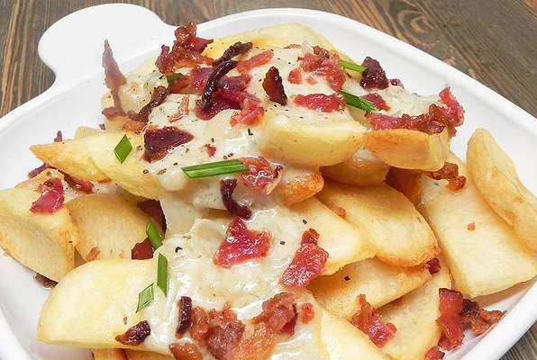

Blue Cheese Fries

Description
- 1 (28 ounce) package frozen French fries (such as Ore Ida®)
- 3 slices bacon, sliced into 1/4-inch pieces
- 1 tablespoon butter
- ¼ cup minced scallions
- 1 tablespoon minced garlic
- ½ cup blue cheese crumbles
- 2 tablespoons half-and-half
Steps
- Preheat oven to 450 degrees F (230 degrees C). Spread French fries in a single layer on a baking sheet.
- Bake in the preheated oven until lightly golden and crisp, 24 to 34 minutes.
- Place bacon in a large skillet and cook over medium-high heat; cook and stir until evenly browned, about 10 minutes. Drain bacon slices on paper towels, reserving some of the bacon grease in the skillet. Slice into 1/4-inch strips.
- Stir butter into the bacon grease and set skillet over medium heat; add scallions and garlic. Cook and stir until scallions are soft and browning, about 5 minutes. Add blue cheese; cook and stir with a spatula until cheese is melted, 2 to 3 minutes. Stir in half-and-half until sauce is smooth, 2 to 3 minutes. Remove from heat and let sit for 2 minutes.
- Arrange fries on a plate and drizzle sauce over fries. Sprinkle bacon strips on top.